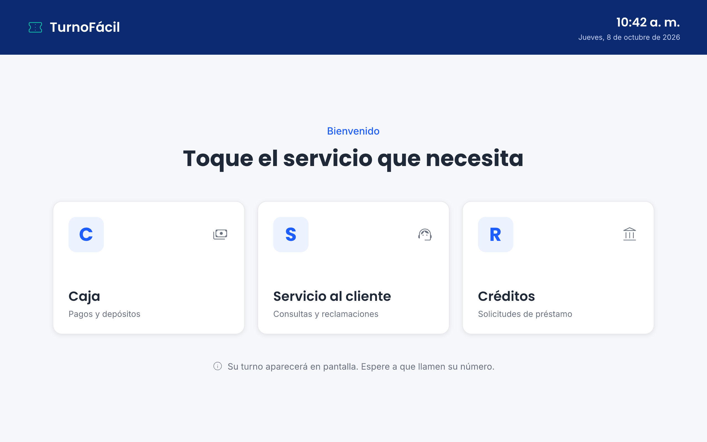

P1Kiosco — Generar turno
El cliente elige un servicio con un solo toque y el sistema le asigna el siguiente número del día.
- Barra azul noche con el logo, la hora y la fecha.
- Tarjetas grandes con el prefijo del servicio (C, S, R), su nombre y una descripción corta.
- Solo aparecen los servicios activos.
- Texto de ayuda que explica qué pasa después.
UsuarioCliente
Trazabilidad
Reglas
Vista Vue
/kiosco